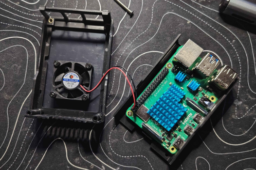

Programmation
Raspberry Pi 4
Un mini-ordinateur
Projets électroniques
Capteurs
Python
Composant de l'appareil
- CPU Broadcom BCM2711, quadricœur ARM Cortex-A72 à 1,5 GHz
- GPU Broadcom VideoCore VI, compatible OpenGL ES 3.0
- RAM 4 Go LPDDR4
- Stockage Carte microSD
- Alimentation USB-C, 5 V / 3 A recommandé